建议提前观看这部高分短片《精神分裂症》
▼
150吨的陨石从天空呼啸而来。
幸运的是
陨石砸中了亨利家对面楼的天线。
亨利毫发无损。
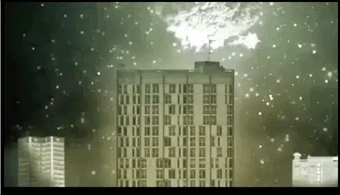
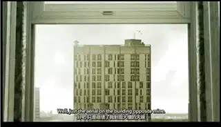
可是，奇怪的事情发生了
亨利的世界与真实的世界偏离了91cm
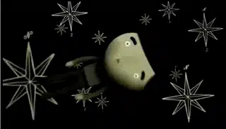
要接电话
他必须要站在距离电话91cm的位置才能拿到电话。
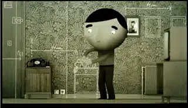
坐椅子也只能在坐在偏离椅子91cm的位置
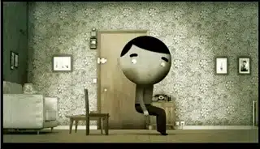
为了适应这种错乱
亨利用粉笔在家里做了各种标示。
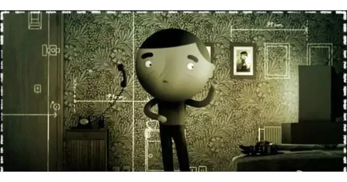
虽然在家里可以应付自如
但是在工作和与别人相处中
他的问题几乎是毁灭性的。
他因此丢掉了工作
变得越来越孤独。
他以为医生可以帮他
可医生明明什么都不懂。
他以为妈妈会明白
可妈妈根本不懂什么是关心。
这种错乱与孤独也只有亨利自己知道。

从他人那里找不到救赎和希望。
亨利决心要自我救赎。
他用望远镜观察着天空
等待陨石再次降临。
他开车飞驰
希望能提前赶到陨石降落的地方。
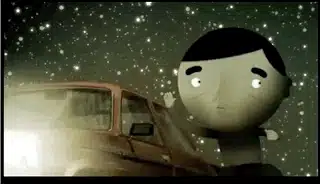
他相信
如果他被陨石再次砸中
他可以恢复正常。
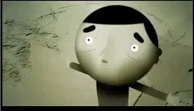
可是，亨利不仅没有恢复正常
他的世界又下降了75cm。
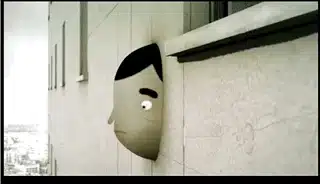
情况变得越来越糟糕。
在人群中
亨利虽然看上去和正常人一样。
但是只有亨利自己知道
他从来都是置身于人群的远处和地处
他始终活在恐怖的黑暗与错乱里。
亨利该如何面对这个世界！
......

这部短片叫《91公分之外》
（又名：精神分裂症）
曾荣获第61届戛纳电影节柯达短片电影奖。
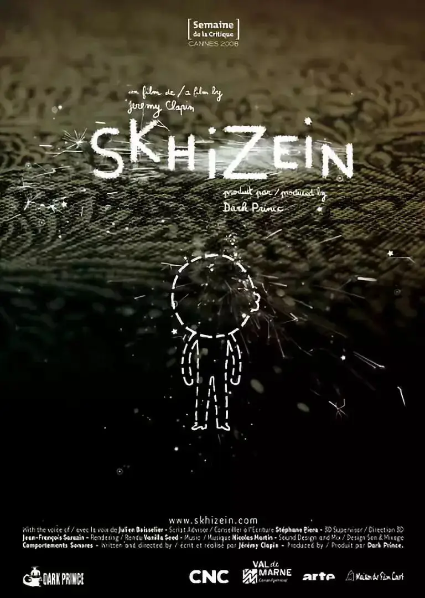
毫无疑问
这是一个残酷的故事。
陨石撞地球是假的
亨利处于精神分裂是真的。
因此，在亨利的感受上
陨石又是绝对真实的。
“陨石”作为一个突然闯入亨利世界的外来物
它可能是工作上的压力
可能是别人的嘲笑和冷漠
也可能是天生的疾病和痛苦。
但是无论如何
“陨石”都给亨利带来了极大的心理压力
甚至导致亨利的世界发生错位。
这种错位虽然只有91cm
但却如此刻骨，永远难以逾越。
亨利始终无法通观自己
他的灵魂总是处于黑暗和孤独中。
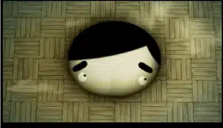
当亨利向别人求助时
其他人非但不能帮他越过隔阂
甚至对亨利产生了二次伤害。
自我救赎和他人救赎都没有出路和希望
亨利唯有走向自我毁灭。
亨利的告别独白令人心碎：
“
他们告诉我的就这些
他们不告诉你有多疯
只告诉你，你迷失了自我，情绪失控
头脑有问题
多一点，少一点
就算知道了我偏移了自己多少厘米
又有什么意义呢？
现在我唯一确定的是
我在哪儿站已经不再是个烦心的事了
....
“
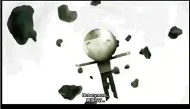
如果黑暗只是黑暗
孤独只是孤独
那我们还可以冷酷至死。
最虐心的是
孤独的人还渴望着被爱。
画面结束后
我们只听到主人公的嘶声呐喊
“
我在这儿！我在这儿
在这里，不是哪儿……
不，在这边！
喂，嗨，在这里
”
明明知道遥不可及
明明孤独到只能看到自己
亨利仍然像飞蛾一样扑向了大火
这真的孤独到骨头里了。
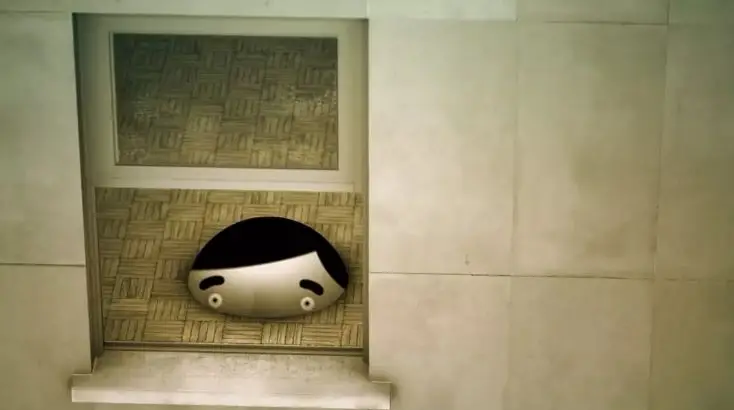
现代社会里
亨利的影子到处都是。
他们孤僻不被别人理解
他们生活在最繁华的地方
却置身于真正的孤独里。
甚至他们自己也活在分裂和痛苦里。
他们面带笑容
心底里却满是悲观愁苦。
他们看上去阳光上进
心底里却早已对人生绝望。
像是坠入深渊一样
一切都是那么的无力。
人与自己和世界有的只是永恒的距离和孤独。
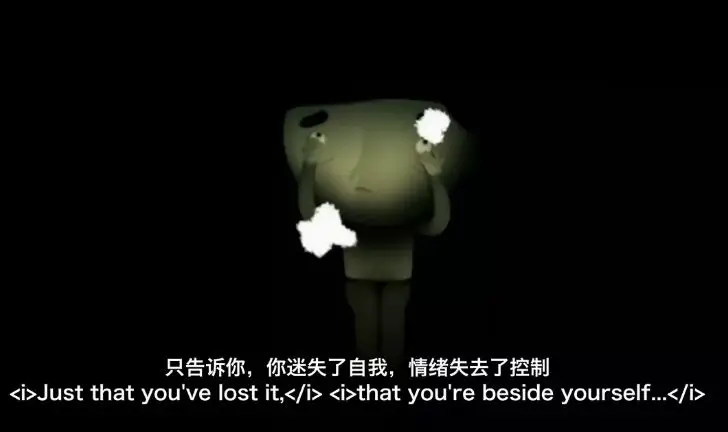
我喜欢短片将这种错位具象化
我喜欢短片将无以言表的压力比做陨石
我喜爱短片里灰暗的色彩
我被亨利的第一句独白就吸引
我被亨利的挣扎虐心
更为亨利生命的结束而怅然若失
我在短片里看到了自己
那样灰暗，那样孤独
那样割裂，又那样渴望。
我们的出路在哪里？
希腊人穷尽一切的智慧
终于知道原来我不知道我是谁
如今，我们也不必再执着于寻找自我
因为那注定是一场没有结果的悲剧
我们需要向上仰望那创造天地的上帝
因为只有在永恒和绝对真理的参照中
我们才能找到自己的坐标
才能彻底回应我们心底里的孤独和渴望
也才不至于不守本位，跌入黑暗。
再刷一遍
相关推荐：
奥斯卡影帝，你把自己演死了
唱的不合拍，那你就闭嘴！
今夜，这部奥斯卡最佳动画短片带你沉入心灵的最深处
这里没有挑逗你眼目情欲的小鲜肉
也没有挑动你肉体情欲的段子
更没有膨胀你今生骄傲的鸡血
我们只在乎那些最质朴真诚的作品
在那里我们才能恢复真正的想象力
我们也坚信这才是我们真正需要的

ID:Six_hundred_hits
长按二维码，一键关注
【六百击】
-END-
电影评论
尽情分享朋友圈

苹果打赏
通道
小提示：文末广告是腾讯配送广告，内容与本号无关，但您的每次点击（无需反复点）都会给平台带来几毛收益，欢迎您点击支持六百击。